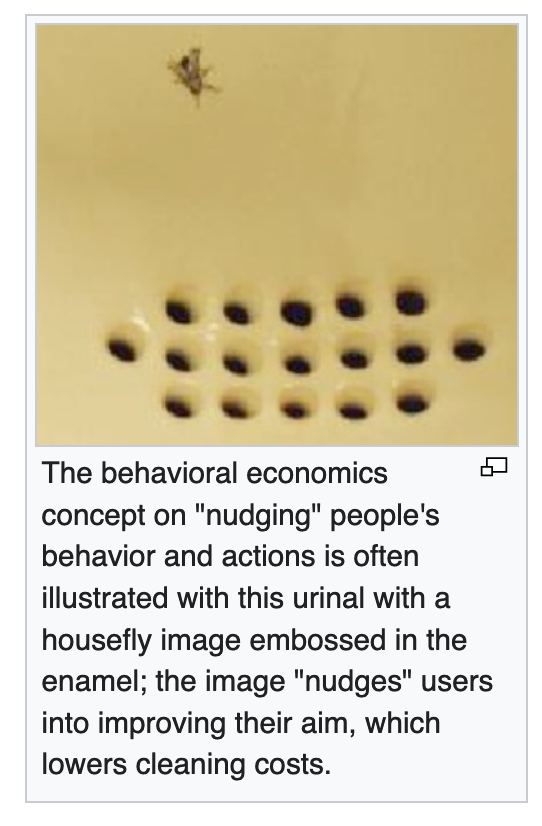

11 Behavioural Economics
Ole Peters
The symbol of behavioral economics is a fly etched into a urinal to reduce spillage.
Apparently, no scientific study of the effect exists.
It’s becoming hard to avoid the impression that behavioral economics, broadly speaking, is a collection of made-up cocktail-party stories.

Derman
People are bad at making rational decisions.
One of the hottest topics in finance and economics for the past two decades has been Behavioral Economics, a field that originated in the research of Daniel Kahneman and Amos Tversky. Tversky died in 1996, and Kahneman was awarded The Sveriges Riksbank Prize in Economic Sciences in Memory of Alfred Nobel in 2002. The Nobel committee cited their joint work on “prospect theory as an alternative, that better accounts for observed behavior” of humans making decisions “when future consequences are uncertain” (aren’t they always?).
Classical financial modeling assumes that people make decisions in a cold-blooded utilitarian way that is therefore susceptible to mathematics and statistics. Kahneman and Tversky (K&T) cataloged a collection of irrational warm-blooded peculiarities in the way people choose between alternative bets on their own potential profits and losses when playing games of chance.
Not everyone agrees with K&T. Real life is not always a game of chance; while the probability of throwing heads and tails is known exactly, the probability of human behavior is not. Animate individuals are driven by motives that can defy statistics. Our legal system recognizes this, and finds defendants guilty or innocent not on the basis of statistical evidence but on the basis of judgement and believability.
Prospect Theory
K&T developed what they call prospect theory. In prospect theory, as opposed to classical economic theory, K&T replaced homo economicus’s rational notions of losses and gains and their probabilities by the empirically determined “irrational” values used by everyday fearful and greedy hot-blooded homo affectus.
Classical economic theory was elegant but flawed, and prospect theory was a beautiful idea/ideal that aimed to fix it by taking account of actual human preferences in determining economic value.
Unfortunately, that isn’t what happened. First, the ambitions of prospect theory as a science of human behavior foundered in a maelstrom of increasing mathematical complexity. Second, academics use the cover of behavioral economics to write papers on all sorts of irrelevant apparent irrationalities. Third, the part of behavioral economics that did flourish enormously is the notion that people are probabilistically challenged, and that it requires governments and agencies, helped by academics, to nudge people into doing what is “good” for them.
Consider Richard Thaler, a Chicago academic who has been an influential and early researcher in behavioral finance and is also the co-author of Nudge, a book he says is about “enlisting the science of choice to make life easier for people and by gentling nudging them in directions that will make their lives better.”
It’s remarkable that behavioral economics has evolved from a field of study into a tool for manipulating people. This is not government of the people by the people for the people. I think I’d rather be forced than nudged. At least then the battle lines are clearer.